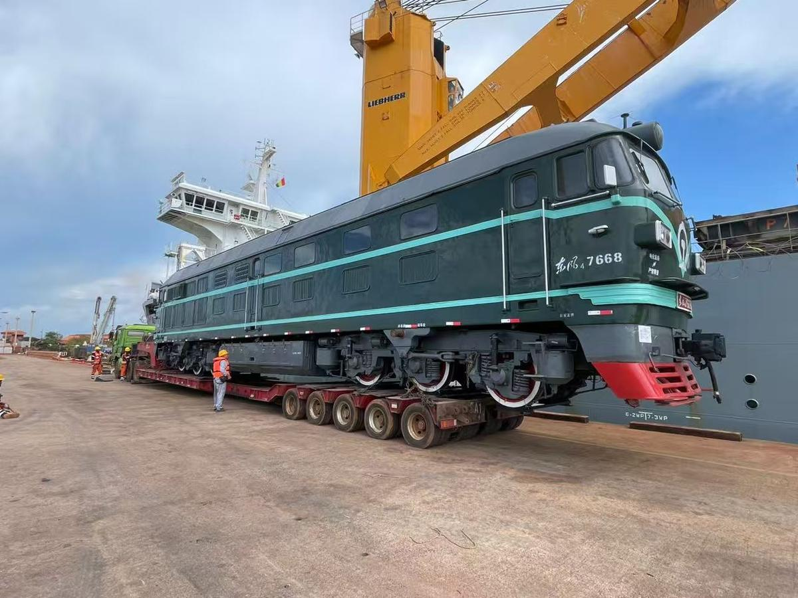
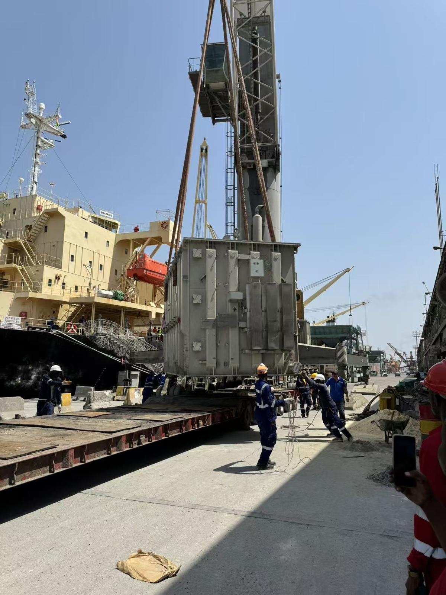

Mission
Remove trade blockages
Strip the friction out of the China–Africa supply chain — faster, cheaper and more reliable trade for every client we serve.
West & Central Africa — Logistics Group
Port agency, freight forwarding, project cargo and supply-chain management across Guinea, Sierra Leone, Congo, Ghana and Nigeria — with our own fleet, warehouses and customs teams on the ground.
01About Full page →
Akita Group was founded in Conakry, Guinea in 2019 with a single objective: build the most capable logistics operation in West Africa. Today we run our own fleet, our own bonded warehouses and our own customs teams across five countries.
From COSCO liner calls to 110-ton project cargo, the world's most demanding shippers rely on Akita to move freight where infrastructure is hardest.
02What we do Full page →
From vessel arrival to final delivery — we own the capability at every step.
Full coverage from pre-arrival to departure — agency licenses in Guinea, Sierra Leone and Congo, priority berthing rights and direct port-authority relationships.
→Heavy, oversized and breakbulk specialists: 110-ton reactors, locomotives, industrial plant. Route surveys, government coordination, delivery.
→In-house teams in every country we operate — deep knowledge of local tax regulation, duty-free procedures and mining-sector compliance.
→Ocean, air and road freight, fully integrated with clearance — supported in English, French and Chinese.
→50,000+ m² of bonded warehouse and secured yard across Guinea, Sierra Leone and Congo — all cargo types, real-time inventory.
→General transport contractor to SPIC Guinea Aluminum and Nordgold — 3M+ tons of ore per year with a dedicated mining fleet.
→03Our foundation Full page →
Mission
Strip the friction out of the China–Africa supply chain — faster, cheaper and more reliable trade for every client we serve.
Vision
Set the benchmark for China–Africa logistics efficiency, and be the long-term partner for every business expanding into the continent.
Principles
Integrity builds long-term cooperation. Efficiency rebuilds logistics. Innovation solves the pain points. Not slogans — operating instructions.
04On the ground Full page →
Vessels worked, cargo moved — in five countries, without pause.

Port of Conakry, Guinea

Guinea port

Freetown, Sierra Leone

Pointe-Noire, Congo
05Project cases All cases →
Complex, high-stakes projects executed with precision.

Complete project logistics for diesel locomotives: port discharge, inland movement and final positioning on rail — executed without incident on specialised multi-axle low-bed trailers.

A 110-ton reactor body moved 900 km across degraded roads, steep gradients and dense towns. Early government coordination and detailed route surveys made Akita the only operator in Guinea able to deliver.
06Contact
Port agency, freight, project cargo or supply chain — the team replies within two hours, in English, French or Chinese.